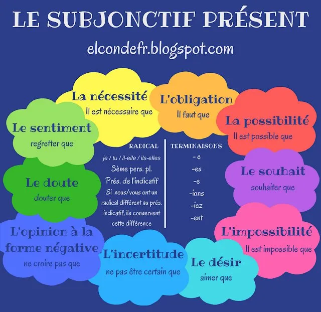

Le subjonctif présent
À retenir
Le subjonctif est le mode de l'incertitude, du doute, du souhait, de l'émotion. Il s'oppose à l'indicatif, qui est le mode de la réalité, de la certitude.
Pour le reconnaître : on le trouve souvent après "il faut que", "bien que", "pour que", "je souhaite que"...
Construction : radical de la 3e personne du pluriel de l'indicatif présent (ils) + terminaisons -e, -es, -e, -ions, -iez, -ent
Conjugaison complète
Les valeurs du subjonctif présent
L'idée générale : le monde des idées
Le subjonctif est le mode de tout ce qui n'est pas certain, pas réel, pas objectif. Contrairement à l'indicatif qui décrit les faits réels (ce qui est vrai, ce qui se passe vraiment), le subjonctif exprime ce qui se passe dans notre tête : nos souhaits, nos craintes, nos doutes, nos émotions, ce qu'on imagine ou ce qu'on espère.
Indicatif = le monde réel (ce qui est sûr, objectif)
Subjonctif = le monde des idées (ce qui est subjectif, incertain, imaginé, désiré)
Le souhait, le désir
On exprime ce qu'on aimerait voir se réaliser.
Je souhaite que tu viennes à ma fête.
Pourvu qu'il fasse beau demain !
J'aimerais que nous partions ensemble.
L'obligation, la nécessité
On exprime ce qui doit être fait (souvent après "il faut que").
Il faut que tu finisses tes devoirs.
Il est nécessaire que vous soyez à l'heure.
J'exige qu'il parte immédiatement.
Le doute, l'incertitude
On exprime ce qui n'est pas sûr, ce qu'on met en doute.
Je doute qu'il vienne ce soir.
Il est peu probable que nous ayons le temps.
Je ne crois pas que ce soit vrai.
Le sentiment, l'émotion
On exprime une réaction émotionnelle face à quelque chose.
Je suis content que tu sois là.
Je regrette que vous partiez si tôt.
J'ai peur qu'il ait un accident.
La possibilité, l'hypothèse
On exprime ce qui est possible, mais pas certain.
Il est possible qu'il pleuve demain.
Il se peut que nous arrivions en retard.
Peut-être qu'il fasse froid ce soir.
Après certaines conjonctions
Certains mots imposent le subjonctif, même si le sens est proche du réel.
Bien qu'il soit tard, je reste.
Je t'aide pour que tu finisses plus vite.
Avant que tu partes, dis-moi au revoir.
Jusqu'à ce que tu comprennes, je répéterai.
Résumé simple
Indicatif = la réalité, les faits (je sais que c'est vrai)
Subjonctif = les idées, les sentiments, les possibilités (ce qui est dans ma tête)
Pièges à éviter
PIÈGE N°1 : "que" + indicatif ou subjonctif ?
La confusion la plus fréquente !
✅ Après ces verbes → SUBJONCTIF (doute, souhait, émotion) :
il faut que, je souhaite que, je veux que, je doute que, je regrette que, j'ai peur que, pour que, bien que, avant que...
❌ Après ces verbes → INDICATIF (certitude, réalité) :
je pense que, je crois que, il est sûr que, je sais que, il me semble que, parce que, puisque...
Exemples :
✅ Il faut que tu viennes (subjonctif).
❌ Je pense que tu viens (indicatif).
PIÈGE N°2 : les verbes du 1er groupe
Pour les verbes du 1er groupe, le subjonctif présent ressemble beaucoup à l'indicatif présent !
Indicatif présent : je chante, tu chantes, il chante, nous chantons, vous chantez, ils chantent
Subjonctif présent : que je chante, que tu chantes, qu'il chante, que nous chantions, que vous chantiez, qu'ils chantent
Attention : la seule différence est à "nous" et "vous" !
✅ Nous chantons (indicatif) ≠ que nous chantions (subjonctif)
✅ vous chantez (indicatif) ≠ que vous chantiez (subjonctif)
Les 9 irréguliers à connaître par cœur
À apprendre absolument !
être : que je sois, que tu sois, qu'il soit, que nous soyons, que vous soyez, qu'ils soient
avoir : que j'aie, que tu aies, qu'il ait, que nous ayons, que vous ayez, qu'ils aient
aller : que j'aille, que tu ailles, qu'il aille, que nous allions, que vous alliez, qu'ils aillent
faire : que je fasse, que tu fasses, qu'il fasse, que nous fassions, que vous fassiez, qu'ils fassent
pouvoir : que je puisse, que tu puisses, qu'il puisse, que nous puissions, que vous puissiez, qu'ils puissent
vouloir : que je veuille, que tu veuilles, qu'il veuille, que nous voulions, que vous vouliez, qu'ils veuillent
savoir : que je sache, que tu saches, qu'il sache, que nous sachions, que vous sachiez, qu'ils sachent
falloir : qu'il faille
valoir : que je vaille, que tu vailles, qu'il vaille, que nous valions, que vous valiez, qu'ils vaillent
Conjonctions qui exigent le subjonctif
Liste à retenir :
Bien que / Quoique : Bien qu'il soit tard...
Pour que / Afin que : Je parle fort pour que tu entendes.
Avant que : Avant que tu partes...
Jusqu'à ce que : J'attendrai jusqu'à ce que tu viennes.
Sans que : Il est parti sans que je le sache.
À condition que : Je viendrai à condition que tu sois là.
Pourvu que : Pourvu qu'il fasse beau !
Cartes mentales
Carte 1 - Présent du subjonctif

Carte 2 - Le subjonctif (général)

Carte 3 - Présent du subjonctif

Carte 4 - Subjonctif présent
